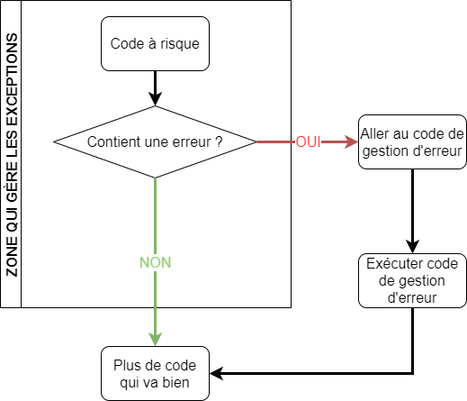
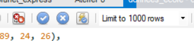

Procédures stockées et transactions
Procédures stockées
Les procédures stockées sont semblables aux fonctions. Elles permettent de préparer des traitements (comme des fonctions) et de les exécuter. À la différence des fonctions les procédures stockées :
- Peuvent ne pas retourner de valeur.
- Peuvent s'appeller elle-même.
- Les procédures peuvent appeler des fonctions (alors que les fonctions ne peuvent pas appeler de procédures).
Procédures VS fonctions
Les procédures gèrent généralement la logique applicative (couche métier). Par exemple, les ajouts ou modifications aux données.
Les fonctions définissent généralement un traitement d’appoint, un calcul ou l'obtention d'un renseignement.
Déclarer et invoquer une procédure
DELIMITER $$
CREATE PROCEDURE nom_procedure()
BEGIN
traitement
END $$
DELIMITER ;
Pour invoquer une procédure, on utilise l'instruction CALL.
CALL nom_procedure();
Paramètres de procédure
Les paramètres d'une procédure peuvent prendre 3 formes :
- IN : paramètre d'entrée, donc en lecture seule
- OUT : paramètre de sortie, donc en écriture puis en lecture au besoin
- INOUT : paramètre d'entrée et de sortie (ref). En lecture et en écriture.
On inscrit des variables dans les paramètres OUT pour récupérer les valeurs. Si la variable contient déjà une valeur, il n'est pas possible de la récupérer dans la procédure.
Exemple
Procédure somme:
DELIMITER $$
CREATE PROCEDURE somme (IN _operande1 INT, IN _operande2 INT, OUT _resultat INT)
BEGIN
SET _resultat = _operande1 + _operande2;
END $$
DELIMITER ;
Les procédures n'utilisent pas le mot RETURN (interdit dans une procédure). On utilise toujours le OUT pour faire ce travail.
Invocation de la procédure somme:
SET @resultat = 0; -- Déclaration d'une variable
CALL somme(2, 4, @resultat); -- Invocation
SELECT @resultat; -- Affichage
Documenter une procédure
Chaque procédure s'accompagne d'une documentation d'en-tête
/**
* Description de la procédure
*
* @param IN | OUT | INOUT Nom du paramètre Description
* @param IN | OUT | INOUT Nom du paramètre Description
* ...
*/
Les procédures sont souvent plus longues et plus complexes que les fonctions. Il est donc important de bien documenter votre code.
--- Exercice 5.3.1 ---
A. Créez une procédure pour ajouter un nouveau groupe.
- Vous connaissez seulement le semestre, l'année et le sigle du cours.
- Pour le numéro de groupe, vous devez ajouter 1 au plus haut numéro de groupe existant (ex.: si les groupes 1 à 7 existent, alors le nouveau groupe aura le numéro 8, et si aucun groupe n'est dans la table, le premier groupe aura le numéro 1).
- La procédure retourne le numéro du groupe qui a été créé.
Paramètres : semestre, annee et sigle du cours
Valeur de retour : le numéro du groupe qui a été créé
B. Créez une procédure pour inscrire un étudiant à un cours. La procédure reçoit le code de l'étudiant, le sigle du cours, le semestre et l'année pour l'inscription.
- L'étudiant est toujours ajouté au groupe avec le plus petit numéro qui a une place de libre.
- Si le groupe est plein (4 étudiants ou plus - oui ce sont de petits groupes!), alors un nouveau groupe est créé.
- Le numéro du groupe dans lequel l'élève a été inscrit est retourné.
Paramètres : code étudiant, sigle du cours, semestre, année
Valeur de retour : numéro du groupe dans lequel l'inscription s'est faite
Gestion d'erreurs
Les Exceptions

Quand gérer les exceptions
Quand une erreur de fonctionnement imprévisible est à risque de survenir :
- Donnée utilisateur
- Référence à un programme externe
- Référence à des données non contrôlées
- Gérer certaines scénarios d'exécution problématiques
Exceptions possibles en BD
Les exceptions possibles dans le domaine de la BD sont :
- Violation de contrainte
- Duplicat de clé primaire
- Duplicat de valeur unique
- Insérer NULL dans une colonne qui n'est pas nullifiable
- Ne pas respecter un contrainte CHECK
- Ne pas respecter une clé étrangère
- Exception personnalisées
Codes d'erreur MySQL
Les codes d'erreur de MySQL sont gérés par les SQLSTATE. Les états SQL sont des codes à 5 chiffres. Les 2 premiers indiquent un état global (erreur, avertissement, succès, information...) et les 3 derniers sont spécifiques à la situation
- 00### : indique un succès
- 01### : avertissements
- 02### : non trouvé
- > 02### : exceptions
Lancer un signal
Le SGBD lance des sigaux lorsqu'une erreur interne se produit. Il est possible de lancer un signal avec un code d'erreur personnalisé.
SIGNAL SQLSTATE 'code 5 chiffres' SET MESSAGE_TEXT = 'Message erreur';
Gestion des signaux et des transactions
Pour attraper un signal, on déclare un gestionnaire (handler).
DECLARE action HANDLER FOR condition | code
L'action est de deux types :
- CONTINUE : le bloc BEGIN - END continue son exécution après la gestion du signal
- EXIT : le bloc BEGIN - END arrête son exécution après la gestion du signal.
Les gestionnaires peuvent seulement être déclarés dans les procédures.
Condition du gestionnaire
La condition peut être de différents types:
-
Une classe de signaux:
- SQLWARNING
- NOT FOUND
- SQLEXCEPTION
-
Un code particulier:
- Code d'erreur MySQL (4 chiffres) : https://dev.mysql.com/doc/mysql-errors/8.0/en/server-error-reference.html
- Un code de signal SQLSIGNAL code5
-
Le nom d'une condition (DECLARE ... CONDITION)
Exemple
Attraper les erreurs de clé primaire nulle
DECLARE EXIT HANDLER FOR 1171
-- Alternative
DECLARE EXIT HANDLER FOR 42000
Attraper toutes les exceptions
DECLARE EXIT HANDLER FOR SQLEXCEPTION
Afficher l'erreur
On récupère l'erreur avec une requête:
GET DIAGNOSTICS
Par exemple, pour récupérer le code et le message d'erreur actuel:
GET DIAGNOSTICS CONDITION 1
_code = RETURNED_SQLSTATE,
_message = MESSAGE_TEXT;
SELECT _code, _message;
Exemple complet de gestion d'exception
Dans cet exemple, en cas d'erreur, le code d'erreur et le message d'erreur sont affichés.
CREATE PROCEDURE gestion_erreur()
BEGIN
DECLARE _code CHAR(5);
DECLARE _message TEXT;
...
-- On répère ce bloc pour chaque type d'erreur à traiter (remplacer 00000 par le code désiré)
DECLARE EXIT HANDLER FOR 00000
BEGIN
GET DIAGNOSTICS CONDITION 1
_code = RETURNED_SQLSTATE,
_message = MESSAGE_TEXT;
SELECT _code, _message;
END;
...
--- Exercice 5.3.2 ---
A. Reprenez votre exercice 5.3.1 A), mais en cas d'erreur, faites en sorte que l'exécution s'arrête et que la valeur retournée (le numéro de groupe) soit -1.
- Utilisez "DECLARE EXIT HANDLER FOR SQLEXCEPTION" pour attraper tout type d'exception.
- Pour tester, vous pouvez par exemple ajouter NOT NULL comme contraite du groupes.cours_id, et appeler votre procédure avec un sigle qui n'existe pas.
B. Créez une procédure pour noter un étudiant (donc créer une ligne dans la table evaluations_etudiants). Cette procédure doit accepter un code étudiant, l'id de groupe (que l'on suppose avoir obtenu par un autre moyen), le nom de l'évaluation et bien sûr la note.
-
Votre procédure doit permettre d'assigner une note, peu importe s'il existe déjà ou non une note dans evaluations_etudiants.
-
Gérez l'erreur qui pourrait survenir si l'évaluation en tant que telle n'existe pas dans la table evaluations.
Paramètres : code_etudiant, id_groupe, nom_evaluation, note.
Transactions
Mise en situation
Timmy, dévoué programmeur, crée un script qui importe, dans notre système École, les notes de tous les étudiants à une évaluation. Afin d'éviter d'insérer de mauvaises données, Timmy applique la règle suivante : si l'une des notes ne peut pas être ajoutée (par exemple pour une violation de contrainte), alors aucune note n'est ajoutée.
Comment, faire en sorte d'annuler les insertions précédentes?
Principe d’une transaction
Une transaction contient une série d’instructions. Une fois que toutes les instructions ont été effectuées, on peut les enregistrer (COMMIT) ou les annuler (ROLLBACK).
L’utilisation de transaction facilite l’exécution d’instructions multiples et aide à maintenir une intégrité dans nos données.
Fonctionnement d'une transaction
- On commence par indiquer notre intention de faire un bloc d'instructions (transaction) par START TRANSACTION
- On effectue les requêtes
- On fait un COMMIT de la transaction si tout s'est bien déroulé OU un ROLLBACK si on veut tout annuler.
Exemple
Ajoutez la contrainte suivante à la table evaluations_etudiants
CONSTRAINT interval_note CHECK (note BETWEEN 0 AND 100)
Pour tester, il faut désactiver le autocommit de MySQL Workbench (c'est activé quand le bouton est enfoncé avec un petit carré bleu):

Ajoutons maintenant les données suivantes:
INSERT INTO evaluations_etudiants (evaluation_id, code_etudiant, note, nom_document) VALUES
(1, 1234567, 22, NULL);
INSERT INTO evaluations_etudiants (evaluation_id, code_etudiant, note, nom_document) VALUES
(1, 4567890, -5, NULL);
INSERT INTO evaluations_etudiants (evaluation_id, code_etudiant, note, nom_document) VALUES
(1, 8901234, 24, NULL);
Comment revenir en arrière et supprimer le premier enregistrement qui s'est bien déroulé ?
Exemple de ROLLBACK
SELECT count(evaluation_id) FROM evaluations_etudiants; -- Affiche 75
START TRANSACTION;
INSERT INTO evaluations_etudiants (evaluation_id, code_etudiant, note, nom_document) VALUES
(1, 1234567, 22, NULL);
INSERT INTO evaluations_etudiants (evaluation_id, code_etudiant, note, nom_document) VALUES
(1, 4567890, -5, NULL);
INSERT INTO evaluations_etudiants (evaluation_id, code_etudiant, note, nom_document) VALUES
(1, 8901234, 24, NULL);
SELECT count(evaluation_id) FROM evaluations_etudiants; -- Affiche 77 (+2)
ROLLBACK; -- Il y a eu erreur
SELECT count(evaluation_id) FROM evaluations_etudiants; -- Affiche 75
Exemple de commit
Disons que maintenant, les insertions sont valides:
SELECT count(evaluation_id) FROM evaluations_etudiants; -- Affiche 75
START TRANSACTION;
INSERT INTO evaluations_etudiants (evaluation_id, code_etudiant, note, nom_document) VALUES
(1, 1234567, 22, NULL);
INSERT INTO evaluations_etudiants (evaluation_id, code_etudiant, note, nom_document) VALUES
(1, 4567890, 17, NULL);
INSERT INTO evaluations_etudiants (evaluations_id, code_etudiant, note, nom_document) VALUES
(1, 8901234, 24, NULL);
SELECT count(evaluation_id) FROM evaluations_etudiants; -- Affiche 78 (+3)
COMMIT; -- Tout s'est bien déroulé
SELECT count(evaluation_id) FROM evaluations_etudiants; -- Affiche 78
Démonstration
Créez une procédure pour inscire un nouveau vol.
- La procédure reçoit une immatriculation de vaisseau, le numéro de vol et le nom du capitaine du vol.
- La procédure crée le vol et ajoute le capitaine en tant que membre d'équipage. En cas d'erreur, aucune donnée ne doit être créée.
--- Exercice 5.3.3 ---
Vous devez ajouter 3 nouveaux enseignants dans le système École. Voici les données de ceux-ci.
Effectuez l'opération manuellement en utilisant les transactions. Si jamais l'un d'entre eux ne peut pas être ajouté, vous devez pouvoir revenir en arrière.
| Code employé | Nom | No assurance sociale | Ancienneté |
|---|---|---|---|
| 7645 | Diana de Themyscira | 111222333 | 15 |
| 7654 | Jason Todd | 987654321 | 1 |
| 6574 | Barry Allen | 555777333 | 8 |